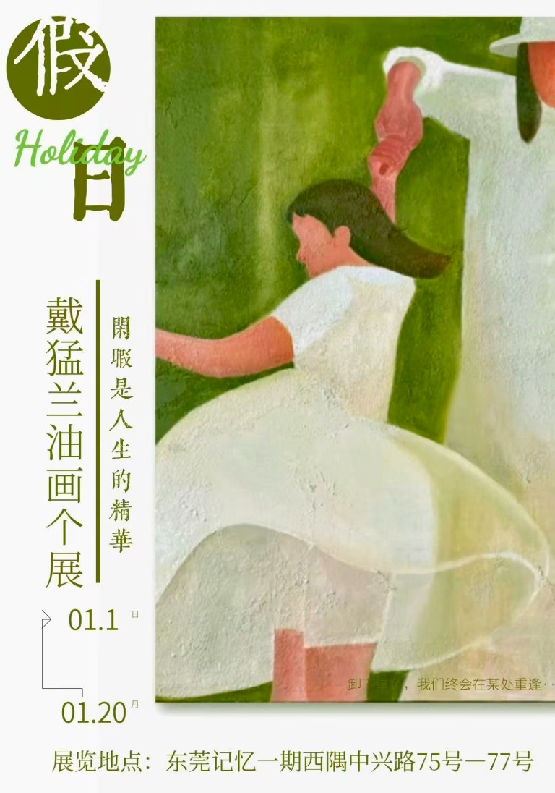

「可见之外」当代艺术展
策划 / 总执行 · IFree 艺术馆
VISUAL ARTIST & CURATOR
我以「戴猛兰」为笔名，在绘画、教育与策展之间探索个体经验的表达。

ABOUT ME
艺术对我来说，是一种与世界建立关系的方式。我的创作关注日常感受、女性视角与人与空间的微妙联系。
2015 年至今，我持续从事美术教育、艺术策展与绘画创作。除了个人创作，也通过 IFree 艺术馆与更多人分享艺术的开放与自由。
SELECTED WORKS
EXPERIENCE
策划 / 总执行 · IFree 艺术馆
主理人，持续策划展览与公共艺术教育项目
东莞市美术家协会会员 · 广东女画家协会会员
LET'S WORK TOGETHER
欢迎展览、策展、艺术教育及跨界合作。
xiaolandai@ln.hk ↗